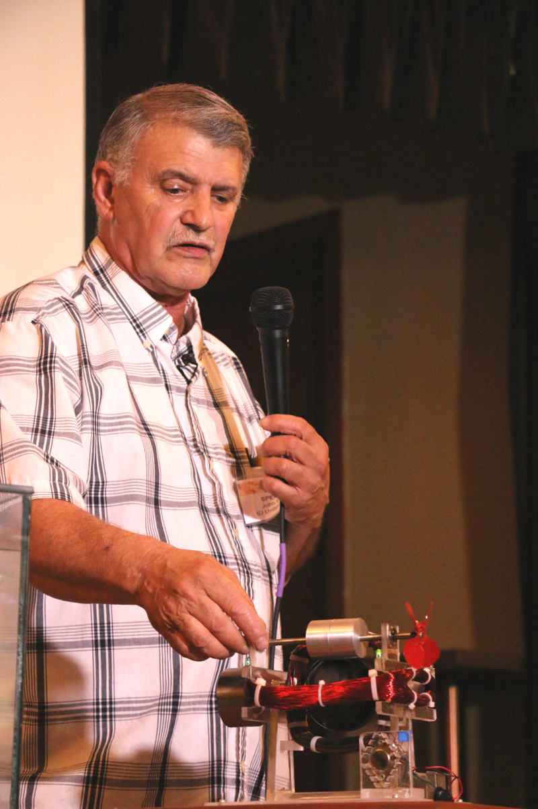
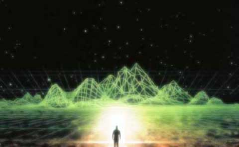
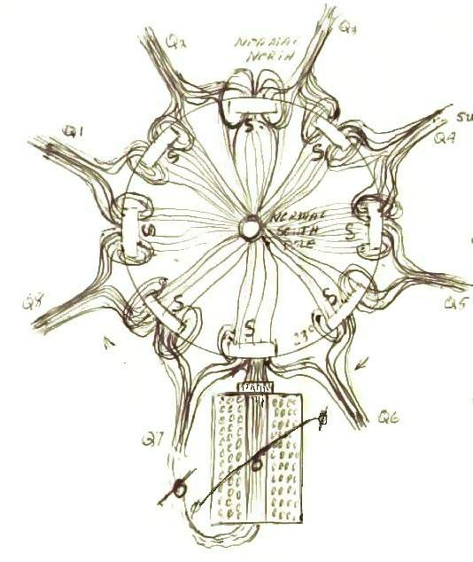
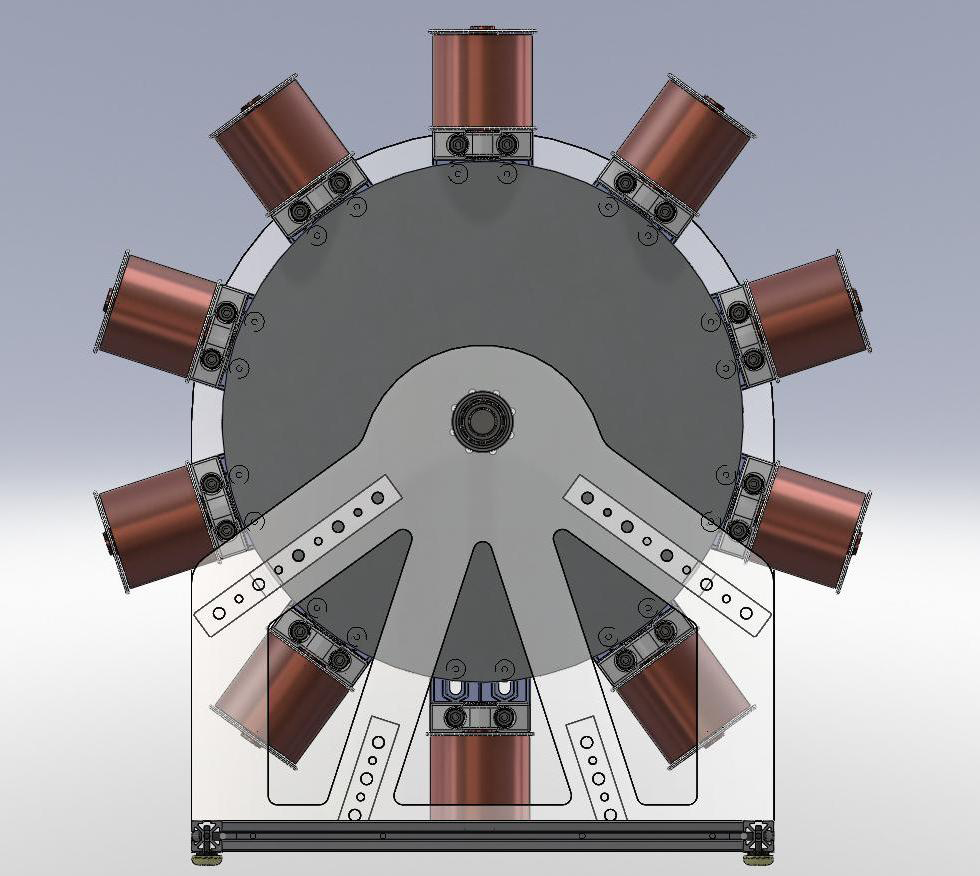

JOHN BEDINI
A TRIBUTE TO THE LEGACY OF
JOHN BEDINI'S WORK IN THE ENERGY SCIENCES

John Bedini (Coeur d'Alene, Idaho) is one of the true legends of the Free Energy movement. Starting in the 1970's with Bedini Electronics, John became one of the premiere audio and circuit design engineers in the world. A prolific inventor, his “Bedini Audio Spatial Environments” (B.A.S.E.) remains the pinnacle of 3-Dimensional audio sound processing. With numerous patents on audio systems, regenerative electric motors and battery charging methods, John pushed the boundaries of science and technology. His developments in the field of Crystal Batteries are another milestone to produce practical appliances that essentially power themselves. He is also known for his invention of the Bedini SG, which is the world's most replicated “free energy” machine. In the picture above, you see an early one of his models, which can start with dead D Cell batteries and when he spins it, it will start turning on its own, will continue to accelerate, turn a propeller, blink LEDs and hours after it was started, the D Cell batteries will be fully charged. Although John has mastered this technology for decades, this was demonstrated publicly for the first time at the 2015 Energy Science and Technology Conference.


Monopole Motor Magnetic Fields

BEDINI RPX SIDEBAND GENERATORS
2017 ENERGY SCIENCE & TECHNOLOGY CONFERENCE
 Stubblefield-Unlimited Power from the Ground
Stubblefield-Unlimited Power from the Ground
2017 Copyright - All Rights Reserved
John Bedini | Free Energy